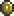
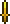
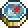
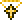
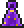
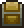

Mimic
| Drops | |
|---|---|
| Coins: | 10 |
| Item | Rate |
| | 14.29% |
|  Magic Dagger | 14.29% |
| Titan Glove | 14.29% |
|  Compass | 14.29% |
| | 14.29% |
|  Cross Necklace | 14.29% |
|  Star Cloak | 14.29% |
| Mimic | |
|---|---|
|  | |
| Statistics | |
| Type | Enemy |
| AI Type | Mimic AI |
| Damage | 80 |
| Max Life | 500 |
| Defense | 30 |
The Mimic is an aggressive mob disguised as any kind of Chest. Mimics will chase the player when approached. They spawn after the defeat of Wall of Flesh or when a Chest Statue is activated. When spawned via the statue, no items are dropped.
Mimics can take on the appearance of chests you would normally find in an area, such as normal brown chests closer to the surface, gold chests found underground, and even locked Shadow chests in The Underworld
If a Mimic is hit by a ranged attack such as a Space Gun blast, it will become active and start chasing the player. Mimics can sometimes be identified by the fact they do not always perfectly fit the 'grid' used, and thus do not line up with blocks as a normal chest would.
Mimics are immune to Cursed Inferno debuff.
Notes
- Using a Hunter Potion will make Mimics glow like any other enemy, identifying them.
- Similarly, using a Spelunker Potion will not make mimics glow like a real chest, also identifying them.
- The Mimics are slightly taller and thinner than a normal chest, and do not have a lock (except shadow chest variation).
- The Mimic seems unaffected by the confused debuff (hitting it with a Dao of Pow won't make it change direction).
- Mimics first appeared in Dungeons & Dragons in 1977, and have appeared in countless RPGs since.
- Mimics disguised as Gold or Shadow chests will not sparkle, giving them away.
History
- 1.1: Introduced.